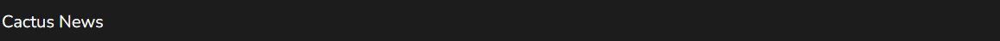
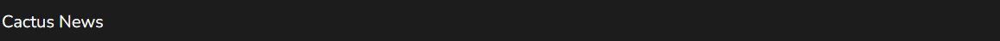
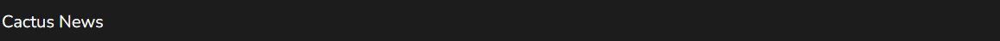

Нова селекция от полезни и интересни пакети с ресурси!
НОВО! Windswept Mace
(2D+3D)
Прави боздуганите 3D и се въртят с вятъра, но остават a
2D спрайт във вашия инвентар!
Изтегли Windswept Mace (2D+3D)
Добавя много различни информационни функции, които ще
да ви помогне да работите с червен камък.
Версия: 1.20-1.20.2
Изтегли Redstone Tweaks


 
